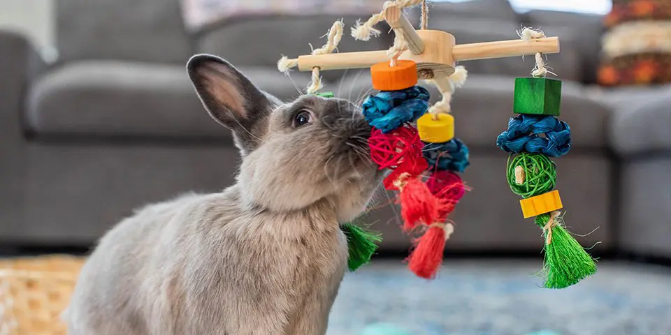

Rabbits are naturally curious "interior designers." If you don't provide them with PurrPets approved toys, they will find their own—like your favorite pair of sneakers or the corner of your rug!

| Toy Type | Examples | The Benefit |
|---|---|---|
| Chew Toys | Apple sticks, Willow balls, Seagrass mats. | Wears down teeth and prevents boredom. |
| Digging Boxes | Box filled with shredded paper or safe soil. | Satisfies the natural urge to burrow. |
| Logic Puzzles | Stacking cups, Snuffle mats, Foraging balls. | Makes them "work" for their treats/pellets. |
| Obstacles | Tunnels, Cardboard castles, Low ramps. | Encourages exercise and "Zoomies." |
You don't need to spend a fortune at the pet store. A plain, tape-free **cardboard toilet paper roll** stuffed with hay is a 5-star toy for most rabbits. They love to toss it, rip it apart, and eat the "filling."
Did you know rabbits can learn tricks? They are highly motivated by food (especially herbs or small fruit bits). You can teach your rabbit to "Spin," "High Five," or come when called. It’s a great way to bond and keep their little brains busy!